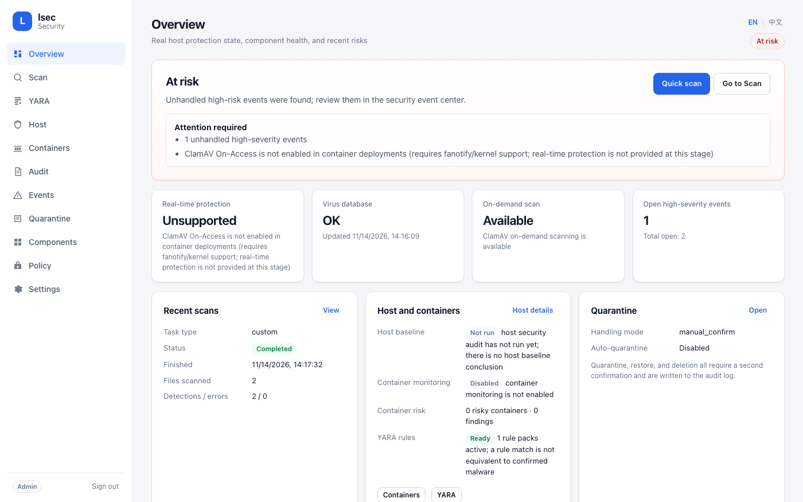

One honest view of your Linux host security.
lsec is a single-instance daemon that unifies ClamAV, YARA, Lynis, Falco, and an optional local Wazuh Agent behind one web UI, HTTP API, and CLI. Every status and risk conclusion comes from real on-host probing — an uninstalled or unverifiable capability is never shown as protecting you.

What it does
Every capability is probed, executed, and verified on the host itself.
Installed is not protecting
Component health distinguishes not installed, stopped, degraded, permission denied, and check failed. The overall status is derived from those facts.
ClamAV and YARA
On-demand scans through clamd, freshclam updates with CVD signature verification, and signed YARA rule packs validated with SHA-256, OpenSSL, and yarac.
Built-in audit and Lynis
Read-only checks for UID 0 accounts, empty passwords, sensitive permissions, SSH configuration, listening ports, ASLR, and AppArmor/SELinux.
Falco and Wazuh events
Falco capability probing with a read-only install plan, plus optional local Wazuh Agent alert ingestion — never a Manager that controls other hosts.
Risky configuration checks
Inventory through a separate GET-only Docker API proxy. lsec does not mount the Docker socket and cannot start, stop, or remove containers.
One event center and audit trail
Normalized events with deterministic severity, deduplication, quarantine with hash verification, and JSON/CSV export for every response action.
What it deliberately does not do
- No automatic remediation. It does not delete files, kill processes, or stop containers without an explicit, audited confirmation.
- No automatic installs. Falco and YARA rule packs are never installed or downloaded silently; install plans are read-only.
- No Wazuh Manager features. Only the local Agent and its alerts are read.
- No ClamAV real-time protection in containers. fanotify/On-Access is not available, and the UI says so instead of claiming coverage.
Run it in a minute
Docker Compose is the fastest path; the first start downloads ClamAV signatures.
Quick start
Build the image, start the daemon on loopback, and read the generated admin token.
git clone https://github.com/UnmetDecade/linux-security-client.git
cd linux-security-client
docker compose up -d --build
docker compose exec -T lsec cat /data/secrets/admin.tokenThen open http://127.0.0.1:8080/. Use an SSH tunnel for remote access.